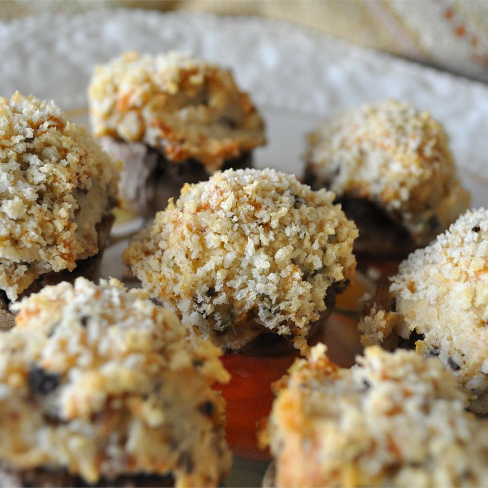

Stuffed Mushrooms Recipe

Ingredients
- 12 whole fresh mushrooms
- 1 tablespoon vegetable oil
- 1 (8 ounce) package cream cheese, softened
- salt and ground black pepper to taste
- ¼ teaspoon onion powder
- ¼ cup grated Parmesan cheese
- ¼ teaspoon ground cayenne pepper
Directions
Step 1
Preheat oven to 350 degrees F (175 degrees C). Spray a baking sheet with cooking spray. Clean mushrooms with a damp paper towel. Carefully break off stems. Chop stems extremely fine, discarding tough end of stems.
Step 2
Heat oil in a large skillet over medium heat. Add garlic and chopped mushroom stems to the skillet. Fry until any moisture has disappeared, taking care not to burn garlic. Set aside to cool.
Step 3
When garlic and mushroom mixture is no longer hot, stir in cream cheese, Parmesan cheese, black pepper, onion powder and cayenne pepper. Mixture should be very thick. Using a little spoon, fill each mushroom cap with a generous amount of stuffing. Arrange the mushroom caps on prepared cookie sheet.
Step 4
Bake for 20 minutes in the preheated oven, or until the mushrooms are piping hot and liquid starts to form under caps.
Nutrition Facts
Per Serving: 88 calories; protein 2.7g; carbohydrates 1.5g; fat 8.2g; cholesterol 22mg; sodium 81.8mg.
Back to Top
Return to the Main Page